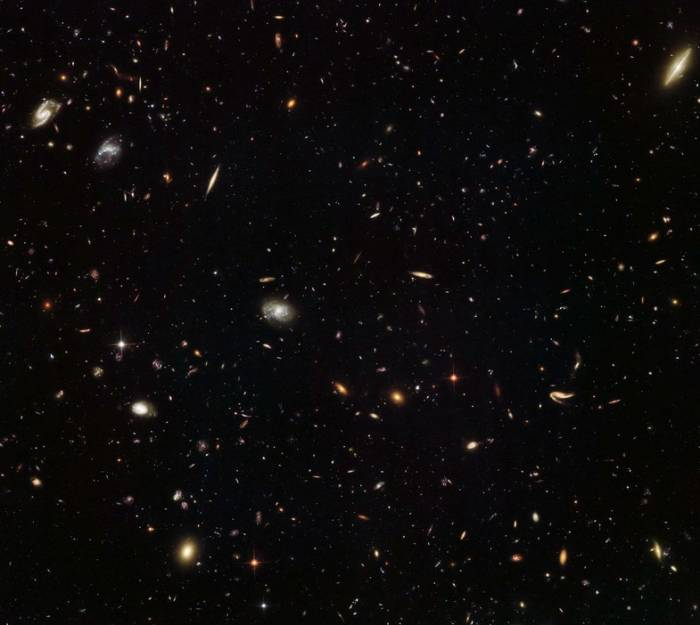

Представленное выше видео показывает лик Солнца с 17 по 19 мая 2016 года. Мы можем видеть гигантскую темную область на верхней части Солнца, которую астрономы называют корональной дырой.
Эта темная область представляют собой часть солнечной короны, в которых плазма имеет пониженную температуру и плотность. По мнению ученых корональные дыры появляются в периоды спада солнечной
активности, формируясь вследствие размыкания линий магнитного поля Солнца. Соответственно, солнечную плазму ничего не удерживает, и она устремляется от Солнца в космическое пространство.
Появление корональных дыр сказывается и на космической погоде - они являются основным компонентом, влияющим на состояние ионосферы и магнитосферы нашей планеты. Дыры могут привести к геомагнитным
возмущениям, от которых страдают метеозависимые люди и происходят сбои в работе космических аппаратов.
Телескоп «Хаббл» показал тысячи галактик в созвездии Льва

Наблюдения астрономов космического пространства показывают, что галактики имеют тенденцию к образованию больших групп, которые ученые называют «скопления».
Фактором, который удерживает галактики вместе в скоплениях, является гравитация – мощная сила тяготения, которая создается как самими галактиками, так темной материей.
В одном скоплении может содержаться от ста до несколько тысяч галактик, а размеры скоплений варьируются от 5 до 30 миллионов световых лет.
MACS J1149.5 + 2223 представляет собой скопление галактик, которое находится на расстоянии около 5 миллиардов световых лет в созвездии Льва.
В 2012 году оно помогло открыть астрономом одну из самых далеких галактик из когда-либо обнаруженных. Свет от этой молодой галактики,
был увеличен в 15 раз гравитационной линзой скопления, прежде чем попасть в объективы телескопов на Земле. Астрономы отмечают,
что свет от одной из первых галактик начал свое путешествие, когда нашей Вселенной было всего 500 миллионов лет!
На Марсе обнаружены следы древних цунами
Ученые обнаружили на поверхности Марса следы мощнейших цунами, которые заметно меняли облик берегов Красной планеты.
Отметим, что согласно некоторым исследования, в далеком прошлом, около 3,5 миллиардов лет назад, на Красной планете существовал океан, который покрывал примерно одну треть всей поверхности. На планете также было множество рек и озер.
Новое исследование было проведено планетологами, которые изучали отложения осадочных пород на севере Аравийской равнины и на расположенной рядом равнине Хриса. Там, считается в свое время, находилось дно океана Марса, покрывавшего большую часть северного полушария Красной планеты.
Изучая снимки равнины, которые были получены при помощи инфракрасной камерой THEMIS, установленной на борту орбитального марсианского аппарата "Mars Odyssey", исследователи заметили довольно необычную вещь. Края равнины покрывает два слоя отложений, один из которых, более древний и состоит из крупных булыжников и других каменистых горных пород, а второй, более молодой, состоящий из песка и глин.
Однако такие отложения присутствовали не на всех краях равнин, а только в тех их частях, которые были расположены рядом с так называемыми «каналами», спор о происхождениях среди ученых идет до сих пор.
По мнению авторов исследования все эти «улики» свидетельствуют о том, что вода по каналам текла вверх и это было вызвано крупными цунами, которые прокатились по марсианскому океану, примерно 3,4 миллиарда лет назад, когда на Марс упали два астероида.
После себя они оставили пару ударных кратеров диаметром более 30 километров каждый. Их следы видны до сих пор на Марсе. Проведенное учеными численное моделирование показало, что в результате катастрофических событий на планете возникли две волны цунами высотой около 100 метров каждая.